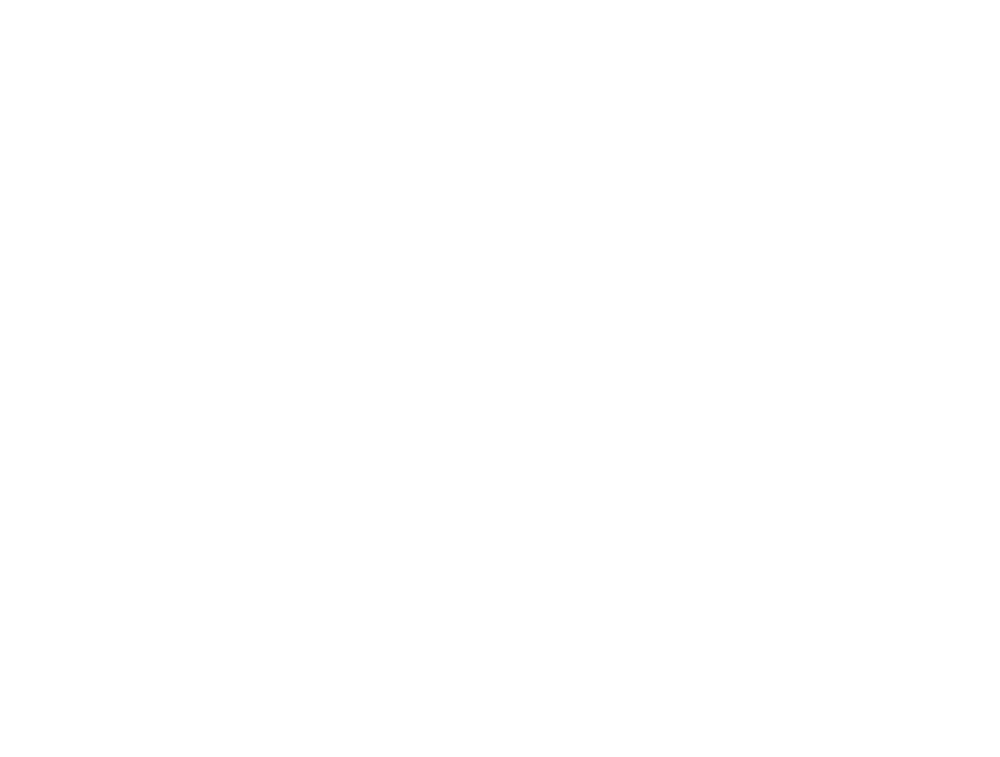

Impacto de la Localía: Real Madrid vs FC Barcelona

Conclusión del Análisis
A través del scatterplot modificado a un gráfico de líneas, podemos observar claramente la distribución, concentración y variabilidad de los goles anotados en condición de local...